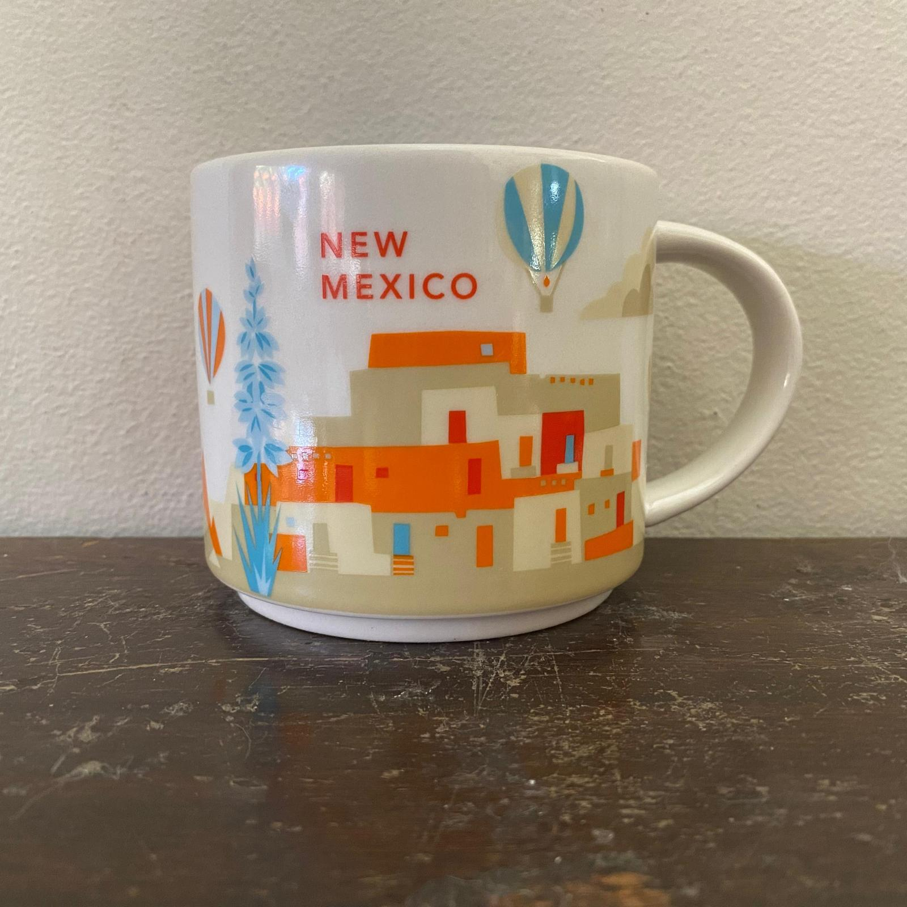

-

- New Mexico Mug Archive
- A short white mug with a pueblo landscape wrapping around the sides. The design is made in orange, blue, and tan, depicting a pueblo with hot air balloons flying overhead. A bright orange sun floats over a blue roadrunner next to the building. The inside of the mug is blue.
Narrative
The You Are Here Collection includes locations that are countries, states, and cities, and began in 2012. This collection is still being produced today, but this New Mexico mug is from 2015. This series is known for its depictions of popular locations from each state, and this mug in particular is a good representation of New Mexico. The You Are Here collection is different from the Been There collection as it depicts local imagery in a more seamless fashion, rather than multiple icons scattered around the mug.
The New Mexico mug is made up of a few colors: red, orange, blue, and tan. It has a pueblo building across one side of it, and above this pueblo there are hot air balloons flying in the air. There is a large blue yucca flower in front of the pueblo that stands out, as the yucca flower is the state flower of New Mexico. The state bird, the roadrunner, is also in the same shade of blue on the other side of the mug under a red sun. In between the roadrunner and the yucca flower is a tall mountain range, and in the middle of these mountains is a bright red chili pepper.
These symbols are all important to New Mexico, many of them being recognized as the literal state symbols, and the color scheme is also reminiscent of the state license plate. Overall, this scene is a good representation of New Mexico, and provides a general idea of what the state is known for.